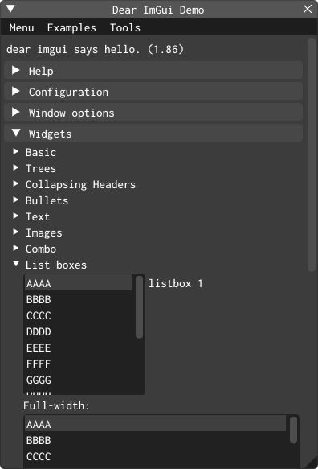

2.3 Primeiro programa
Nesta seção seguiremos um passo a passo de construção de um primeiro programa com a biblioteca ABCg. Será o nosso “Hello, World!”, similar ao exemplo da ABCg mostrado na seção 1.5, mas sem o triângulo colorido renderizado com OpenGL.
Configuração inicial
Faça uma cópia (ou fork) do conteúdo de https://github.com/hbatagelo/abcg.git. Desse modo você poderá modificar livremente a biblioteca e armazená-la em seu repositório pessoal.
Como a ABCg já tem um projeto de exemplo chamado
helloworld, vamos chamar o nosso defirstapp. Emabcg/examples, crie o subdiretórioabcg/examples/firstapp.A escolha de deixar o projeto como um subdiretório de
abcg/examplesé conveniente pois bastará construir a ABCg para que o nosso projeto seja automaticamente construído como um exemplo adicional da biblioteca.Abra o arquivo
abcg/examples/CMakeLists.txte acrescente a linhaadd_subdirectory(firstapp). O conteúdo ficará assim:add_subdirectory(helloworld) add_subdirectory(firstapp)Dessa forma o CMake incluirá o subdiretório
firstappna busca de um scriptCMakeLists.txtcontendo a configuração do projeto.Crie o arquivo
abcg/examples/firstapp/CMakeLists.txt. Edite-o com o seguinte conteúdo:project(firstapp) add_executable(${PROJECT_NAME} main.cpp window.cpp) enable_abcg(${PROJECT_NAME})O comando
projectna primeira linha define o nome do projeto. Em seguida,add_executabledefine que o executável terá o mesmo nome definido emprojecte será gerado a partir dos fontesmain.cppewindow.cpp(não é necessário colocar os arquivos.hou.hpp). Por fim, a funçãoenable_abcg()configura o projeto para usar a ABCg. Essa função é definida emabcg/cmake/ABCg.cmake, que é um script CMake chamado a partir doCMakeLists.txtdo diretório raiz.Em
abcg/examples/firstapp, crie os arquivosmain.cpp,window.cppewindow.hpp. Vamos editá-los a seguir.
main.cpp
Em main.cpp definimos o ponto de entrada da aplicação:
#include "window.hpp"
int main(int argc, char **argv) {
// Create application instance
abcg::Application app(argc, argv);
// Create OpenGL window
Window window;
window.setWindowSettings({.title = "First App"});
// Run application
app.run(window);
return 0;
}Na primeira linha incluímos o arquivo de cabeçalho que terá a definição de uma classe customizada
Windowresponsável pelo comportamento da janela da aplicação. Faremos com que essa classe seja derivada deabcg::OpenGLWindowpara que possamos usar as funções da ABCg de gerenciamento de janelas compatíveis com OpenGL;Na linha 5 criamos um objeto
appda classeabcg::Application, responsável pelo gerenciamento da aplicação;Na linha 8 criamos o objeto
windowque presenta nossa janela customizada;Na linha 9 definimos o título da janela.
setWindowSettingsé uma função membro deabcg::OpenGLWindow, classe base deWindow. A função recebe uma estruturaabcg::WindowSettingscontendo as configurações da janela;Na linha 12, a função
abcg::Application::runé chamada para inicializar os subsistemas da SDL, inicializar a janela recém-criada e entrar no laço principal da aplicação. A função retornará somente quando a janela de aplicação for fechada.
Todas as classes e funções da ABCg fazem parte do namespace abcg. Como vimos no código anterior, abcg::OpenGLWindow é uma classe da ABCg responsável pelo gerenciamento de janelas compatíveis com OpenGL. De modo semelhante, abcg::Application é uma classe da ABCg responsável pelo gerenciamento da aplicação.
Em todos os programas que faremos durante a disciplina, começaremos definindo uma classe derivada de abcg::OpenGLWindow, como a classe Window de nossa primeira aplicação. Tal classe derivada será customizada com comandos do OpenGL para que possamos desenhar o conteúdo da janela.
Internamente a ABCg usa tratamento de exceções. As exceções são lançadas como objetos da classe abcg::Exception, derivada de std::exception. Vamos alterar um pouco o código anterior para capturar as exceções que possam ocorrer e imprimir no console a mensagem de erro correspondente. O código final de main.cpp ficará assim:
#include "window.hpp"
int main(int argc, char **argv) {
try {
// Create application instance
abcg::Application app(argc, argv);
// Create OpenGL window
Window window;
window.setWindowSettings({.title = "First App"});
// Run application
app.run(window);
} catch (std::exception const &exception) {
fmt::print(stderr, "{}\n", exception.what());
return -1;
}
return 0;
}O código anterior foi colocado dentro do escopo try de um bloco try...catch. No escopo catch, a função fmt::print imprime no erro padrão (stderr) a mensagem de erro associada com a exceção capturada. fmt::print faz parte da biblioteca {fmt}. Ela permite a formatação e impressão de strings usando uma sintaxe parecida com as f-strings da linguagem Python7.
window.hpp
No arquivo window.hpp definiremos nossa classe Window que será responsável pelo gerenciamento do conteúdo da janela da aplicação:
#ifndef WINDOW_HPP_
#define WINDOW_HPP_
#include "abcgOpenGL.hpp"
class Window : public abcg::OpenGLWindow {};
#endifObserve novamente que nossa classe Window é derivada de abcg::OpenGLWindow, que faz parte da ABCg.
abcg::OpenGLWindow gerencia uma janela capaz de renderizar gráficos com a API OpenGL. A classe possui um conjunto de funções virtuais que podem ser substituídas pela classe derivada de modo a alterar o comportamento da janela. O comportamento padrão consiste em desenhar a janela com fundo preto, com um contador de FPS (Frames Per Second, ou quadros por segundo) sobreposto no canto superior esquerdo da janela, e um botão no canto inferior esquerdo para alternar entre tela cheia e modo janela (com atalho pela tecla F11). O contador e o botão são gerenciados pela biblioteca Dear ImGui (no restante do texto vamos chamá-la apenas de ImGui).
Por enquanto nossa classe não faz nada de especial. Ela só deriva de abcg::OpenGLWindow e não define nenhuma função ou variável membro. Mesmo assim, já podemos construir a aplicação. Experimente fazer isso. Na linha de comando, use o script build.sh (Linux/macOS) ou build.bat (Windows). Se você estiver no Visual Studio Code, abra a pasta abcg pelo editor, use a opção de configuração do CMake e então construa o projeto (F7). O executável será gerado em abcg/build/bin/firstapp.
Da forma como está, a aplicação mostrará uma janela com fundo preto e os dois controles de GUI (widgets) mencionados anteriomente. Isso acontece porque Window não substitui nenhuma das funções virtuais de abcg::OpenGLWindow. Todo o comportamento está sendo definido pela classe base:

Vamos alterar o conteúdo e o comportamento da nossa janela Window. Imitaremos o comportamento do projeto helloworld que cria uma pequena subjanela da ImGui. Modifique window.hpp para o código a seguir:
#ifndef WINDOW_HPP_
#define WINDOW_HPP_
#include "abcgOpenGL.hpp"
class Window : public abcg::OpenGLWindow {
protected:
void onCreate() override;
void onPaint() override;
void onPaintUI() override;
private:
std::array<float, 4> m_clearColor{0.906f, 0.910f, 0.918f, 1.0f};
};
#endifonCreate, onPaint e onPaintUI substituem funções virtuais de abcg::OpenGLWindow. A palavra-chave override é opcional, mas é recomendável pois deixa explícito que as funções são substituições das funções virtuais da classe base:
onCreateé onde colocaremos os comandos de inicialização do estado da janela e do OpenGL. Internamente a ABCg chama essa função apenas uma vez no início do programa, após ter inicializado os subsistemas da SDL e o OpenGL.onPainté onde colocaremos todas as funções de desenho do OpenGL. Internamente a ABCg chama essa função continuamente no laço principal da aplicação, uma vez para cada quadro (frame) de exibição. Por exemplo, na imagem acima,onPaintestava sendo chamada a uma média de 3988,7 vezes por segundo;onPaintUIé onde colocaremos todas as funções de desenho de widgets da ImGui (botões, menus, caixas de seleção, etc). Internamente,onPaintUIé chamado logo depois queonPainté chamado;m_clearColoré um arranjo de quatro valoresfloatentre 0 e 1. Esses valores definem a cor RGBA de fundo da janela, que neste caso é um cinza claro.
Poderíamos ter definido m_clearColor da seguinte forma, mais familiar aos programadores em C:
float m_clearColor[4] = {0.906f, 0.910f, 0.918f, 1.0f};Entretanto, em C++ o std::array é a forma recomendada e mais segura de trabalhar com arranjos.
window.cpp
Em window.cpp, definiremos as funções virtuais substituídas:
#include "window.hpp"
void Window::onCreate() {
auto const &windowSettings{getWindowSettings()};
fmt::print("Initial window size: {}x{}\n", windowSettings.width,
windowSettings.height);
}
void Window::onPaint() {
// Set the clear color
abcg::glClearColor(m_clearColor.at(0), m_clearColor.at(1), m_clearColor.at(2),
m_clearColor.at(3));
// Clear the color buffer
abcg::glClear(GL_COLOR_BUFFER_BIT);
}
void Window::onPaintUI() {
// Parent class will show fullscreen button and FPS meter
abcg::OpenGLWindow::onPaintUI();
// Our own ImGui widgets go below
{
// Window begin
ImGui::Begin("Hello, First App!");
// Static text
auto const &windowSettings{getWindowSettings()};
ImGui::Text("Current window size: %dx%d (in windowed mode)",
windowSettings.width, windowSettings.height);
// Slider from 0.0f to 1.0f
static float f{};
ImGui::SliderFloat("float", &f, 0.0f, 1.0f);
// ColorEdit to change the clear color
ImGui::ColorEdit3("clear color", m_clearColor.data());
// More static text
ImGui::Text("Application average %.3f ms/frame (%.1f FPS)",
1000.0 / ImGui::GetIO().Framerate, ImGui::GetIO().Framerate);
// Window end
ImGui::End();
}
}Vejamos com mais atenção o trecho com a definição de Window::onCreate:
void Window::onCreate() {
auto const &windowSettings{getWindowSettings()};
fmt::print("Initial window size: {}x{}\n", windowSettings.width,
windowSettings.height);
}Na linha 4, windowSettings é uma estrutura abcg::WindowSettings retornada por abcg::OpenGLWindow::getWindowSettings() com as configurações da janela. Na linha 5, fmt::print imprime no console o tamanho da janela8.
Observe agora o trecho com a definição de Window::onPaint:
void Window::onPaint() {
// Set the clear color
abcg::glClearColor(m_clearColor.at(0), m_clearColor.at(1), m_clearColor.at(2),
m_clearColor.at(3));
// Clear the color buffer
abcg::glClear(GL_COLOR_BUFFER_BIT);
}Aqui são chamadas duas funções do OpenGL: glClearColor e glClear.
glClearColoré utilizada para determinar a cor que será usada para limpar a janela9. A função recebe quatro parâmetros do tipofloat(red,green,blue,alpha), que correspondem às componentes de cor RGB e um valor adicional de opacidade (alpha). Esse formato de cor é chamado de RGBA. Os valores são fixados (clamped) no intervalo \([0,1]\) em ponto flutuante.glClear, usando como argumento a constanteGL_COLOR_BUFFER_BIT, limpa a janela com a cor especificada na última chamada deglClearColor.
Em resumo, nosso onPaint limpa a tela com a cor RGBA especificada em m_clearColor.
As funções do OpenGL são prefixadas com as letras
gl;As constantes do OpenGL são prefixadas com
GL_.Neste curso usaremos as funções do OpenGL que são comuns ao OpenGL ES 3.0 de modo a manter compatibilidade com o WebGL 2.0. Assim conseguiremos fazer aplicações que podem ser executadas tanto no desktop quanto no navegador usando o mesmo código fonte.
A versão mais recente do OpenGL é a 4.6. A documentação de cada versão está disponível em
https://registry.khronos.org/OpenGL/index_gl.php.
Na ABCg, podemos prefixar as funções gl com o namespace abcg de modo a rastrear erros do OpenGL com o sistema de tratamento de exceções da ABCg.
Por exemplo, ao escrevermos abcg::glClear no lugar de glClear, estamos na verdade chamando uma função wrapper que verifica automaticamente se a chamada da função OpenGL é válida. Se algum erro ocorrer, uma exceção será lançada e capturada pelo catch que implementamos na função main. A mensagem de erro (retornada por exception.what() no escopo do catch) inclui a descrição do erro, o nome do arquivo, o nome da função e o número da linha do código onde o erro foi detectado. Isso pode ser bastante útil para a depuração de erros do OpenGL. Sempre que possível, prefixe as funções do OpenGL com abcg::.
A verificação automática de erros do OpenGL é habilitada somente quando a aplicação é compilada no modo Debug. Não há sobrecarga nas chamadas das funções do OpenGL com o namespace abcg quando a aplicação é compilada em modo Release.
Agora vamos à definição de Window::onPaintUI, responsável pelo desenho da interface usando a ImGui:
void Window::onPaintUI() {
// Parent class will show fullscreen button and FPS meter
abcg::OpenGLWindow::onPaintUI();
// Our own ImGui widgets go below
{
// Window begin
ImGui::Begin("Hello, First App!");
// Static text
auto const &windowSettings{getWindowSettings()};
ImGui::Text("Current window size: %dx%d (in windowed mode)",
windowSettings.width, windowSettings.height);
// Slider from 0.0f to 1.0f
static float f{};
ImGui::SliderFloat("float", &f, 0.0f, 1.0f);
// ColorEdit to change the clear color
ImGui::ColorEdit3("clear color", m_clearColor.data());
// More static text
ImGui::Text("Application average %.3f ms/frame (%.1f FPS)",
1000.0 / ImGui::GetIO().Framerate, ImGui::GetIO().Framerate);
// Window end
ImGui::End();
}
}Na linha 19 é chamada a função membro
onPaintUIda classe base, que mostra o medidor de FPS e o botão para alternar entre o modo janela e tela cheia.Na linha 24 é criada uma janela da ImGui com o título “Hello, First App!”. A partir desta linha, até a linha 43, todas as chamadas a funções da ImGui criam widgets dentro dessa janela recém-criada. Apenas para isso ficar mais explícito, todo o código que corresponde a esta janela está dentro do escopo delimitado pelas chaves nas linhas 22 e 44.
Na linha 27 é criado um texto estático que mostra o tamanho atual da janela.
Na linha 32 é criado um slider horizontal que pode variar de 0 a 1 em ponto flutuante. O valor do slider é armazenado em
f. A variávelfé declarada comostaticpara que seu estado seja retido entre as chamadas deonPaintUI(outra opção é declarar a variável como membro da classe).Na linha 36 é criado um widget de edição de cor para alterar os valores de
m_clearColor.Na linha 39 é criado mais um texto estático com informações de FPS extraídas de
ImGui::GetIO().Framerate.
Esse código é praticamente o mesmo do “Hello, World!”. Construa a aplicação para ver o resultado:
A seguir temos alguns exemplos de uso de outros widgets da ImGui. Experimente incluir esses trechos de código em onPaintUI:
Botões:
// 100x50 button if (ImGui::Button("Press me!", ImVec2(100, 50))) { fmt::print("1st button pressed.\n"); } // Nx50 button, where N is the remaining width available ImGui::Button("Press me!", ImVec2(-1, 50)); // See also IsItemHovered, IsItemActive, etc if (ImGui::IsItemClicked()) { fmt::print("2nd Button pressed.\n"); }Checkbox:
static bool enabled{true}; ImGui::Checkbox("Some option", &enabled); fmt::print("The checkbox is {}\n", enabled ? "enabled" : "disabled");Combo box:
static std::size_t currentIndex{}; std::vector comboItems{"AAA", "BBB", "CCC"}; if (ImGui::BeginCombo("Combo box", comboItems.at(currentIndex))) { for (auto index{0U}; index < comboItems.size(); ++index) { bool const isSelected{currentIndex == index}; if (ImGui::Selectable(comboItems.at(index), isSelected)) currentIndex = index; // Set the initial focus when opening the combo (scrolling + keyboard // navigation focus) if (isSelected) ImGui::SetItemDefaultFocus(); } ImGui::EndCombo(); } fmt::print("Selected combo box item: {}\n", comboItems.at(currentIndex));Menu (em uma janela de tamanho fixo e com o flag adicional
ImGuiWindowFlags_MenuBarpara permitir o uso da barra de menu):ImGui::SetNextWindowSize(ImVec2(300, 100)); auto flags{ImGuiWindowFlags_MenuBar | ImGuiWindowFlags_NoResize}; ImGui::Begin("Window with menu", nullptr, flags); { bool save{}; static bool showCompliment{}; // Hold state // Menu Bar if (ImGui::BeginMenuBar()) { // File menu if (ImGui::BeginMenu("File")) { ImGui::MenuItem("Save", nullptr, &save); ImGui::EndMenu(); } // View menu if (ImGui::BeginMenu("View")) { ImGui::MenuItem("Show Compliment", nullptr, &showCompliment); ImGui::EndMenu(); } ImGui::EndMenuBar(); } if (save) { // Save file... } if (showCompliment) { ImGui::Text("You're a beautiful person."); } } ImGui::End();Mais sliders:
static std::array pos2d{0.0f, 0.0f}; ImGui::SliderFloat2("2D position", pos2d.data(), 0.0, 50.0); static std::array pos3d{0.0f, 0.0f, 0.0f}; ImGui::SliderFloat3("3D position", pos3d.data(), -1.0, 1.0);
A ImGui não tem um manual com exemplos de uso de todos os widgets suportados. A melhor referência atualmente é o código da função ImGui::ShowDemoWindow em abcg/external/imgui/imgui_demo.cpp. Essa função cria uma janela de demonstração contendo uma grande variedade de exemplos de uso de widgets e recursos da ImGui. No exemplo “Hello, World!”, tal janela é exibida quando a caixa de seleção “Show demo window” está ativada.
Por exemplo, caso você queira implementar um “List Box” como exibido na janela de demonstração abaixo, procure pela string “List boxes” ou “listbox 1” em abcg/external/imgui/imgui_demo.cpp, copie o código correspondente e adapte-o em sua aplicação.

O código correspondente em imgui_demo.cpp é o seguinte:
const char* items[] = { "AAAA", "BBBB", "CCCC", "DDDD", "EEEE", "FFFF", "GGGG", "HHHH", "IIII", "JJJJ", "KKKK", "LLLLLLL", "MMMM", "OOOOOOO" };
static int item_current_idx = 0; // Here we store our selection data as an index.
if (ImGui::BeginListBox("listbox 1"))
{
for (int n = 0; n < IM_ARRAYSIZE(items); n++)
{
const bool is_selected = (item_current_idx == n);
if (ImGui::Selectable(items[n], is_selected))
item_current_idx = n;
// Set the initial focus when opening the combo (scrolling + keyboard navigation focus)
if (is_selected)
ImGui::SetItemDefaultFocus();
}
ImGui::EndListBox();
}A documentação das funções, constantes e enumerações está no formato de comentários nos arquivos abcg/external/imgui/imgui.h e abcg/external/imgui/imgui.cpp.
A ImGui é uma biblioteca de GUI que trabalha em modo imediato (o “Im” de ImGui vem de immediate mode), isto é, os controles de UI não retém estado entre os quadros de exibição. Sempre que a função onPaintUI é chamada, a GUI é redesenhada por completo. O gerenciamento de estado deve ser feito pelo usuário, por exemplo, através de variáveis estáticas (como a variável f da linha 32 de window.cpp para guardar o valor do slider) ou variáveis membros da classe (como a variável m_clearColor da classe Window)10.
Compilando para WebAssembly
Para compilar nossa aplicação para WebAssembly basta usar o script build-wasm.sh (Linux/macOS) ou build-wasm.bat (Windows). Apenas certifique-se de habilitar antes as variáveis de ambiente do SDK do Emscripten como fizemos na seção 1.5.
Após a construção do projeto, os arquivos resultantes (firstapp.js e firstapp.wasm) serão gravados no subdiretório public. Para usá-los vamos precisar de um arquivo HTML.
Faça uma cópia de um dos arquivos HTML já existentes em public (helloworld.html, full_window.html ou full_window_console.html). Mude o nome do arquivo para firstapp.html. No final do arquivo, mude a string src="helloworld.js" para src="firstapp.js", assim:
<script async type="text/javascript" src="firstapp.js"></script>Para testar, monte o servidor local com runweb.sh ou runweb.bat e abra o arquivo HTML em http://localhost:8080/.
Disponibilize o conteúdo web de seus projetos no GitHub Pages para formar um portfólio de atividades feitas no curso:
Na sua conta do GitHub, crie um repositório com visibilidade pública. Pode ser seu próprio fork da ABCg.
No diretório raiz, crie um subdiretório
firstappcom os arquivosfirstapp.*, mas renomeiefirstapp.htmlparaindex.html;Nas configurações do repositório no GitHub, habilite o GitHub Pages informando o branch que será utilizado (por exemplo,
main).
O conteúdo estará disponível em https://username.github.io/reponame/firstapp/ onde username e reponame são respectivamente seu nome de usuário e o nome do repositório.
Ao longo do quadrimestre, suba seus projetos nesse repositório. No diretório raiz você pode criar um index.html com a descrição do portfólio e o link para cada página de projeto.
Um subconjunto da
{fmt}foi incorporado à biblioteca de formatação de texto no C++20. O suporte equivalente aofmt::print(impressão formatada com saída padrão) está disponível no C++23 através destd::print, mas ainda não é suportado nas principais implementações da biblioteca padrão.↩︎O tamanho padrão para uma aplicação desktop é 800x600. Na versão para web, a janela pode ser redimensionada de acordo com a regra CSS do elemento canvas do HTML5.↩︎
Mais precisamente,
glClearColordefine a cor que será utilizada para limpar os buffers de cor do framebuffer. Veremos mais sobre o conceito de framebuffer nos próximos capítulos.↩︎A ImGui pode reter algum estado dos controles de UI entre os frames. Por exemplo, em uma janela com vários botões, a ImGui guarda internamente qual botão está com o foco atual. Em um widget do tipo árvore, ela guarda a informação de quais nós estão expandidos e quais estão colapsados.↩︎